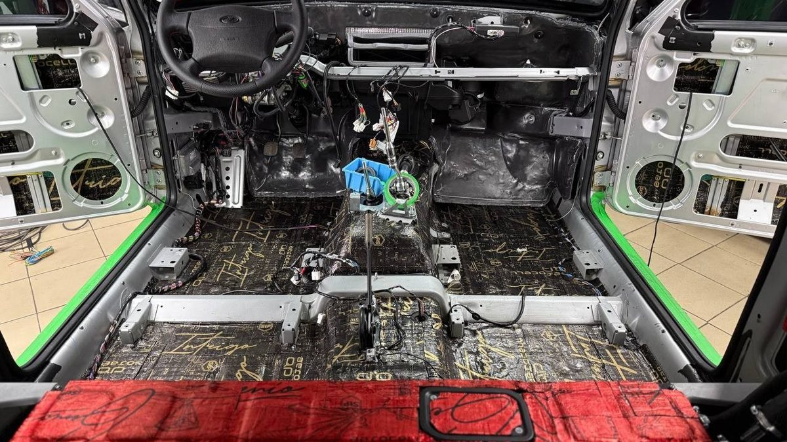

Семь утра, Заволжье, первый крепкий мороз. Вы жмёте кнопку автозапуска с восьмого этажа, брелок пищит ошибкой, и вы идёте во двор заводить машину сами, а потом десять минут скребёте стекло. Через месяц выясняется, что автозапуск срабатывает через раз, а сервис не может снять бампер, потому что сирена орёт при открытом капоте. Знакомо по рассказам соседей или по своей машине?
Установка сигнализации в Ярославле обычно идёт не так по двум причинам: система выбрана не под ваш двор и вашу машину, а монтаж сделан так, что угонщик находит блок за пять минут. Ниже разберём, как устроены современные системы, как сейчас обходят защиту, что выбрать и о чём спросить установщика до того, как он снимет первую панель.

Как сейчас угоняют и от чего защищает сигнализация
Сирена и мигание фарами давно никого не пугают. Угонщику важно другое: открыть машину без шума и запустить двигатель без ключа. Для этого есть три распространённых пути.
- Ретранслятор, или «удочка». Работает против машин с бесключевым доступом. Один человек стоит у подъезда и ловит сигнал вашего ключа, второй у машины передаёт его дальше. Машина думает, что ключ рядом, открывается и заводится.
- Подключение к шине CAN. Через проводку фары, бампера или под машиной подают в шину команды «открыть» и «разрешить запуск». Штатная охрана этому верит, потому что команды выглядят как родные.
- Прописка нового ключа. Через диагностический разъём машине «знакомят» пустой ключ, и она считает его своим.
Отсюда главная мысль: охранная система ценна не громкостью, а тем, что ставит препятствие, которое штатная электроника обойти не позволяет. Это блокировка двигателя, которая не снимается без метки или кода, и авторизация владельца, которую не подделать ретранслятором.
Из чего состоит автосигнализация
Если вы выбираете автосигнализацию в Ярославле, полезно понимать, за что платите. Современный комплекс – это несколько частей.
- Центральный блок с CAN-модулем. Через шину он читает состояние дверей и капота, управляет замками и умеет запрещать запуск двигателя.
- Брелок с обратной связью. Показывает, что происходит с машиной, сообщает о тревоге и о том, что двигатель завёлся.
- GSM-модуль и приложение. Управление с телефона из любой точки, где есть связь, уведомления о тревоге, иногда отслеживание местоположения по GPS.
- Метка. Маленький брелок без кнопок, который вы носите с собой. Пока метки рядом нет, двигатель не запустится, даже если у вора настоящий ключ.
- Блокировки. Реле на цепях запуска и цифровые блокировки по шине. Чем их больше и чем неочевиднее места, тем дольше угонщику работать.
- Обходчик иммобилайзера для автозапуска. Без него штатный иммобилайзер не даст завестись без ключа в замке.
Отдельно стоят механические блокираторы: штыревые и бесштыревые, на капот, педаль тормоза, рулевой вал, коробку передач. Они не заменяют сигнализацию, но заставляют угонщика возиться с железом на виду у двора.
Установка сигнализации с автозапуском в Ярославле: что учесть зимой
Автозапуск у нас ставят ради зимы, и требования к нему простые: должен заводиться, когда нужно, и не сажать аккумулятор. На что обратить внимание.
- Запуск по температуре и по времени. Машина сама прогревается ночью, когда мороз крепчает, или к выходу на работу.
- Контроль напряжения аккумулятора. Система заводит двигатель, если заряд упал. Помните, что короткие прогревы на морозе батарею не заряжают, поэтому длину прогрева настраивают под вашу машину.
- Механическая коробка. Для автозапуска на МКПП нужна процедура «программной нейтрали»: вы оставляете машину на нейтрали, система это запоминает. Без неё машину с включённой передачей заводить нельзя.
- Концевик капота. При открытом капоте автозапуск должен блокироваться, иначе однажды машина заведётся у мастера на подъёмнике.
Самый спорный узел – обход иммобилайзера. Старый способ: в машине прячут запасной ключ или его чип. Это дыра в защите, ведь ключ лежит внутри салона. Современный бесключевой обход работает через шину CAN и ключ внутри не держит. Но он должен включаться только по команде сигнализации, а сама сигнализация должна быть спрятана так, чтобы до неё не добрались первым делом. Спросите у установщика, какой обход он поставит на вашу модель и почему.
Брелок или телефон: дальность в панельных дворах
Производители пишут дальность брелока в километрах, но это цифры для чистого поля. В Брагине или Фрунзенском районе между вами и машиной железобетон, соседние дома и десятки чужих сигналов, и реальная дальность становится в разы меньше. Если машина стоит за домом или на парковке у торгового центра, брелок может просто не достать.
Поэтому выбор простой. Машина под окном, и вы спускаетесь сами – хватит системы с брелоком обратной связи, например StarLine A93. Машина ночует далеко от окон, на работе за забором, у дачи в соседнем посёлке – нужен GSM-модуль и приложение. У StarLine S96 есть исполнения с GSM и с GPS, у Pandora такие системы тоже есть в нескольких линейках. Приложение показывает температуру в салоне, напряжение аккумулятора и местоположение, а автозапуск работает хоть с дачи.

Установка сигнализации на авто: где кроется качество
Одна и та же система в руках двух мастеров даёт разную защиту. Разница в монтаже, и вот что его отличает.
- Место центрального блока. Бардачок, ниша под рулём и за магнитолой проверяются угонщиками первыми. Хороший установщик прячет блок в месте, которое не повторяется от машины к машине.
- Вид проводки. Новые провода уложены в заводскую оплётку и обмотаны тканевой лентой, как штатный жгут. Свежая изолента выдаёт место за секунды.
- Соединения. Пайка с изоляцией, а не скрутки. Скрутка на морозе окисляется, и через сезон появляются «глюки», которые потом ищут по всему салону.
- Блокировки. Несколько точек в разных местах, а не одно реле рядом с блоком.
- Подключение через CAN там, где возможно. Меньше врезок в штатную проводку – меньше рисков для электроники машины.
Отдельный вопрос – новая машина на дилерской гарантии. Перед монтажом спросите, есть ли у установщика сертификаты на установку, и заберите документы на работу: они понадобятся, если у дилера появятся вопросы.
Ошибки, за которые потом платят дважды
- Купить дешёвую систему с динамическим кодом без диалога. Такие брелоки перехватывают кодграбберами, и сигнализация становится ключом для вора. - Поставить систему «у знакомого в гараже» без схемы монтажа. Когда что-то откажет, следующий мастер будет разбирать полсалона, чтобы понять, что куда подключено. - Оставить ключ или чип в салоне ради автозапуска. - Не настроить сервисный режим. Без него каждый визит на мойку или в сервис превращается в концерт сирены или в передачу брелока чужим людям. - Сэкономить на метке. Без неё сигнализация сообщит об угоне, но не помешает ему.
Что спросить у мастера до начала работ
1. Какая система подходит под мою машину и почему именно она, а не модель дешевле или дороже? 2. Какой обход иммобилайзера вы ставите и хранится ли ключ в салоне? 3. Сколько будет блокировок и как они снимаются? 4. Будет ли метка или код из штатных кнопок для запуска? 5. Отдадите ли вы схему или протокол установки? 6. Что делать, если через месяц нужно поменять настройки автозапуска?
Если на эти вопросы отвечают уверенно и без «да там всё стандартно», вы на правильном месте.
Частые вопросы
Сколько стоит сигнализация с автозапуском в Ярославле с установкой, какая цена? Цену честно называют после осмотра машины. Она складывается из самой системы (брелок, GSM, GPS), обхода иммобилайзера под вашу модель, числа блокировок, механического блокиратора, если он нужен, и сложности разборки салона. Две машины одного года могут требовать разной работы, поэтому цифры «по телефону вслепую» обычно потом растут.
Есть ли смысл в установке сигнализации Старлайн в Ярославле, или лучше выбрать Pandora? Обе марки делают системы с CAN-модулями, метками, GSM и приложениями. Разница в конкретных моделях, интерфейсе приложения и поддержке вашей машины. Выбирают по задаче и по тому, как система работает именно с вашей моделью, а не по логотипу.
Где делать установку сигнализации в Ярославле на авто с бесключевым доступом? Там, где умеют закрывать ретрансляторную атаку: блокируют штатный радиоканал ключа или ставят авторизацию по метке. Спросите об этом прямо до начала работ.
Сажает ли автозапуск аккумулятор зимой? Частые короткие прогревы на морозе забирают больше, чем возвращают. Помогают запуск по напряжению, разумная длина прогрева и исправная батарея.
Можно ли поставить сигнализацию на новую машину без проблем с дилером? Да, если установщик имеет сертификаты и даёт документы на работу. Перед монтажом уточните это у мастера.
Куда ехать в Ярославле
Студия «Звук на Волге», Ярославль, проспект Октября, 82б. Работаем пн–пт с 8:30 до 20:00, сб–вс с 10:00 до 19:00. Ставим сигнализации с автозапуском и без, с управлением из приложения и отслеживанием машины, механические блокираторы и электронные блокировки, включая блокировку штатного радиоканала. Для нового автомобиля можно не переживать за дилерскую гарантию: у студии есть необходимые сертификаты. После установки поможем с настройками и ответим на вопросы.
Посмотреть варианты и записаться на осмотр: охранные системы с установкой в Ярославле. Телефон +7 902 220-75-55, сообщения в ВК: vk.me/avtostil_yaroslavl.
Раньше нас знали как «Автостиль». Мы обновились и, раз занимаемся звуком в Ярославле, назвались «Звук на Волге». Адрес и мастера те же.